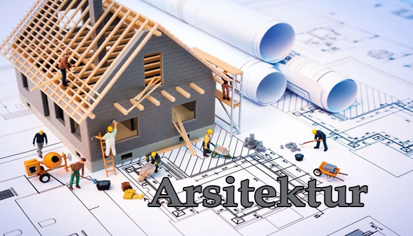
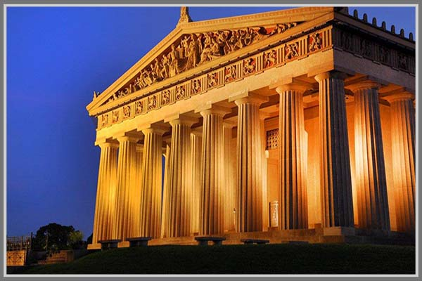
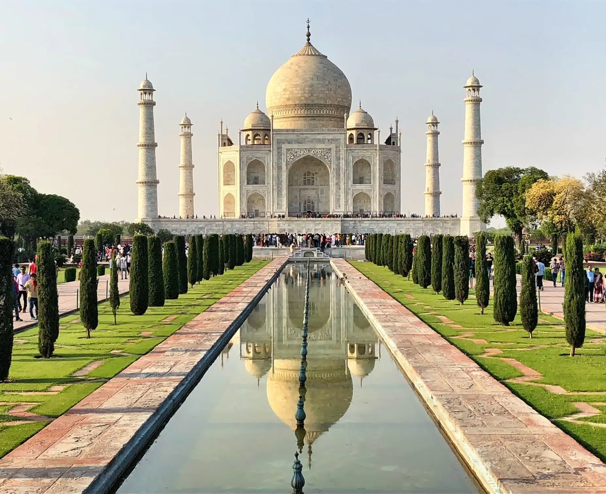
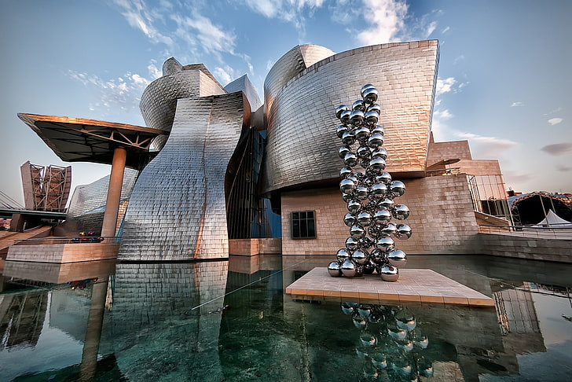
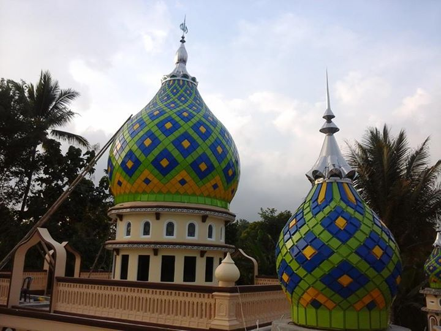
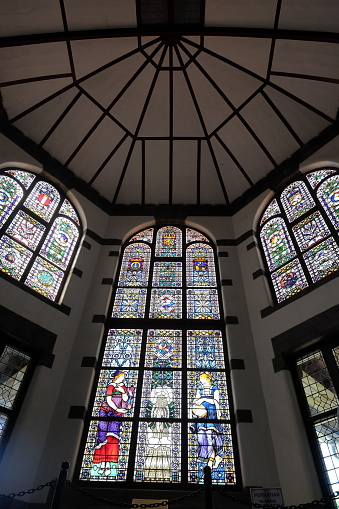
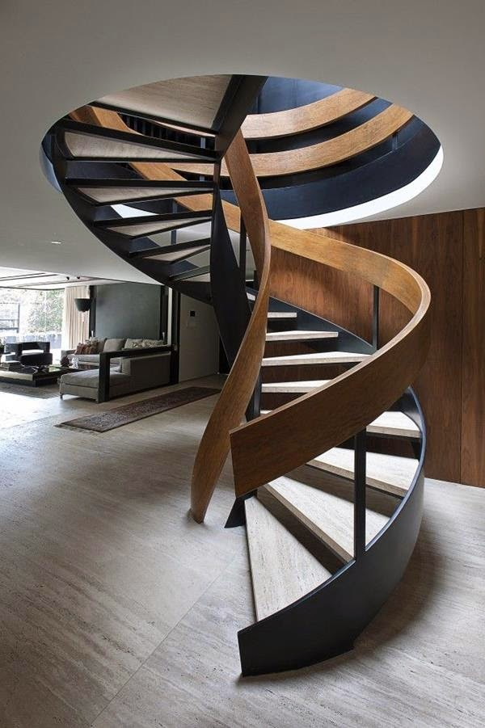

Matematika: Bahasa Universal Arsitektur
Sejak zaman kuno, arsitek telah menggunakan prinsip matematika untuk menciptakan struktur yang tidak hanya fungsional tetapi juga indah secara visual. Dari Piramida Mesir hingga pencakar langit modern, matematika adalah tulang punggung desain arsitektur.
Rasio emas (1:1.618), deret Fibonacci, geometri suci, dan perhitungan struktural adalah beberapa konsep matematika yang membentuk dasar arsitektur besar sepanjang sejarah.
Di dunia modern, perangkat lunak desain berbasis matematika memungkinkan arsitek untuk menciptakan bentuk-bentuk kompleks yang sebelumnya tidak terbayangkan.

Prinsip Matematika dalam Arsitektur
Konsep-konsep matematika yang membentuk dasar desain arsitektur
Rasio Emas
Proporsi 1:1.618 yang dianggap sebagai standar keindahan visual, digunakan dalam fasad bangunan dan tata letak ruang.
Deret Fibonacci
Urutan angka yang menciptakan spiral alami, diterapkan dalam desain organik dan pertumbuhan struktural.
Geometri Euclidean
Dasar untuk bentuk-bentuk arsitektur tradisional seperti segitiga, persegi, dan lingkaran dalam desain bangunan.
Geometri Fraktal
Pola yang berulang pada skala berbeda, menciptakan kompleksitas visual dalam struktur modern.
Perhitungan Struktural
Analisis beban, tegangan, dan kompresi untuk memastikan stabilitas bangunan.
Algoritma Parametrik
Pendekatan komputasional untuk menghasilkan bentuk arsitektur yang kompleks dan optimal.
Bangunan Ikonik dan Matematikanya
Struktur terkenal yang menerapkan prinsip matematika

Parthenon, Yunani
Kuil Yunani kuno ini menggunakan rasio emas secara ekstensif dalam proporsinya. Setiap elemen, dari kolom hingga pedimen, dihitung dengan presisi matematis untuk menciptakan kesan harmonis.
Fakta Matematika:
Lebar Parthenon adalah 1.618 kali tinggi, tepat mengikuti rasio emas. Kolom-kolomnya juga miring ke dalam dengan sudut matematis yang tepat untuk melawan ilusi optik.

Taj Mahal, India
Monumen cinta ini adalah mahakarya simetri matematis. Desainnya berbasis pada grid geometris sempurna dengan kubah utama sebagai titik fokus dari seluruh komposisi.
Fakta Matematika:
Taj Mahal menggunakan prinsip simetri delapan tingkat (Hasht-Bihisht) dalam denahnya, dengan setiap elemen memiliki pasangan yang seimbang secara matematis.

Guggenheim Bilbao, Spanyol
Desain dekonstruktivis Frank Gehry ini menggunakan algoritma matematika kompleks untuk menciptakan bentuk-bentuk organik yang revolusioner dalam arsitektur.
Fakta Matematika:
Bentuk bangunan dimodelkan menggunakan perangkat lunak CATIA yang awalnya dikembangkan untuk industri aerospace, menerapkan persamaan diferensial dan geometri NURBS.
Elemen Arsitektur dan Matematikanya
Bagian-bagian bangunan yang didasarkan pada prinsip matematika
Kolom dan Pilaster
Proporsi kolom mengikuti aturan matematis ketat - diameter bawah biasanya 1/8 tinggi kolom, dengan penyempitan yang dihitung secara presisi.

Lengkung dan Kubah
Bentuk parabola atau setengah lingkaran yang memanfaatkan prinsip distribusi beban matematis untuk menciptakan ruang luas tanpa penyangga tengah.

Jendela dan Ornamen
Pola geometris dalam kaca patri dan ornamen sering menggunakan tessellation (pengubinan) matematis yang sempurna tanpa celah.

Tangga Spiral
Mengikuti kurva logaritmik yang dihitung secara matematis untuk kenyamanan langkah dengan tinggi dan lebar yang konsisten.
"Arsitektur adalah matematika yang divisualisasikan, geometri yang dihidupkan, dan angka-angka yang diberi bentuk fisik. Setiap bangunan besar dimulai dari perhitungan yang tepat."